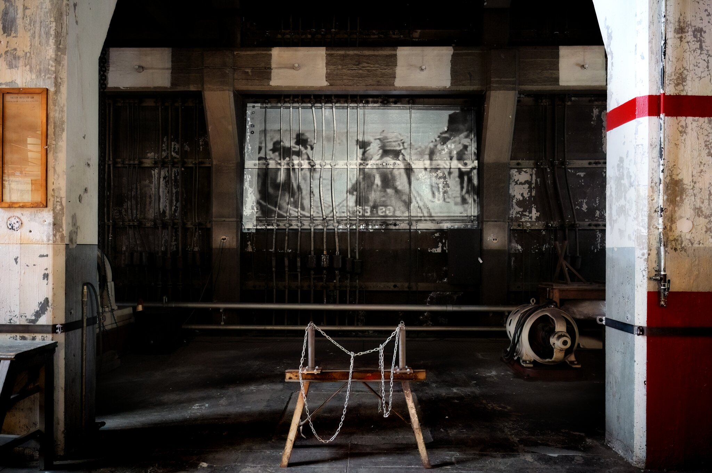

MUTATE
Back
MUTATE reimagined the Georgetown Steam Plant as an expanded bodily interior, transforming the site into an embodied archive. Rooted in Black interiority and vernacular practice, the installation brought together sound, video, and sculptural elements to create an environment where memory and venacular materials were continuously activated.
Through a loosely structured, improvised performance, CHARI inhabited “The Caretaker,” a fictional archival steward responsible for maintaining the system. The Care aker monitoring its operations while navigating moments of breakdown and transition. At times, The Caretaker “downloaded” themselves into new archival forms, becoming both operator and material within the archive.
(2024)